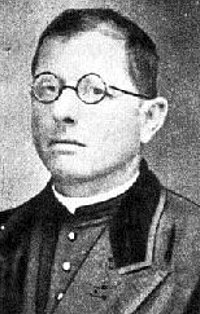

HISTORIA
Fundación del club
Se considera como día de la fundación del club al 1 de abril de 1908, a manos de Lorenzo Barolomé Martín Massa, un padre salesiano que para alejar a los chicos del preligro constante que había en las calles
Se considera como día de la fundación del club al 1 de abril de 1908, a manos de Lorenzo Barolomé Martín Massa, un padre salesiano que para alejar a los chicos del preligro constante que había en las calles